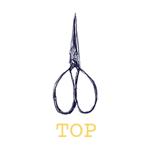

c) Research

Some useful books for the project:


The Art and Design Factory: April 2025
For the pulpit, it will be given character through ecclesiastical shapes favouring the thorny or crooked, as well as the early 'primitive' art nouveau with its more wild, rugged natural shapes. Either a carved wooden item or a stage prop out of papier mache etc so more fantastical.
Botanical vocabulary like stem, petal, apex, cones, etc. Rustic and farmhouseish, robust flavour. Fill it with the nature of the imagination, the flowers and seeds and plants that belong there.
Thinking about cook books and the heavy amount of styled pictures, magazines for their layout and variety, horticultural info, but acting mostly in the ancient literary tradition of nature books, colourful illustrated compendiums, bestiaries, prayer-books, herbals, pstalters, cosmographic diagrams, nature books, catalogues, music books, typological and medicinal works, drawing on tapestries and their narrative functions, flourishing pictures in different media, awash with decorations including lots of little characters cavorting in the marginalia; the literary equivalent of gargoyles and other architectural flourishes; but endlessly reproducibile instead of a single item with maybe a couple of painstaking copies because I’ll pageset it in indesign for machine printing. So it’s all also inside a broader European mythological tradition but with stuff not seen or heard of before. Mixtures of freshness and ancientness fits with my feeling that the fresh and new is more readily found in the ancient than the recent. Media specifically are ink, watercolour, bodycolour, charcoal, pencil, digitally coloured pencil drawings, maybe photoshop paintings and (doubtfully) woodblocks.
It will also involve research into things like animal development in the womb, growth, deformity and stuff like bilateral gynandromorphy, polycephaly, different species mixed together and other common features of inventive creatures, drawing on insect characteristics for mammals etc. Will have a lot of the character of l’art ludique, and focus is on being imaginative and stimulating the imagination. it’s about searching and looking among what is available in the natural world for the hidden secrets - digging up, kind of like archaeology the archetypes and the characteristics, defining traits of the creatures that nobody has ever seen, but might learn from anyway particularly through stories. In the same way we extrapolate facts from fragments of life styles through archaeological finds, it’s about pinpointing and extending fictions through imaginary windows - the stimuli might be an anthropological detail or a scientific one, but being open to inspiration and exploring different things especially off the beaten track and into real wildness is the way to do it: it's about visual instincts and design. Without the landscapes in reach right now these voyages can only be made in the imagination, and the longing to experience them only makes it more necessary for me to invent them in the interim.
it’s also like detective work too, joining dots and running threads, as will be shown in the hunt for imagery diagrams constructed in 3d
Melodies of relief: must remain flexible and open to the unknown
Drawing in the vaults of Camelot
Plunging through the river surface
My feeling is that artist should be a trade the same way gardener or landscaper or woodworker is.
April the first.

Sheldrake: evolution has to be an interplay of habit and creativity just like our own lives: if we just had creativity nothing would ever stabilise; if we just had habit nothing new would ever happen.
Bookmarks
https://milkmonitor.me
http://nature.jardin.free.fr/categ.html
https://www.demons-et-merveilles.fr/les_galeries.html
https://www.theguardian.com/science/2025/mar/28/mercury
https://nightbringer.se
https://eclecticlight.co/2018/03/03/no-greater-naturalist-paintings-of-bruno-liljefors-1/
http://www.emaproject.eu/events/concerts/146-the-carnyx-from-tintignac.html

^transparent version
My ideal is to create things in similar ways to how the ones who live in these made-up countrysides do in their dens and caves or tree houses. Making things in a non human way
